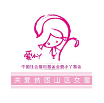
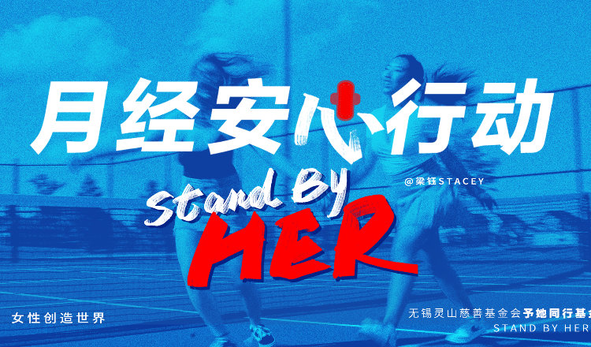
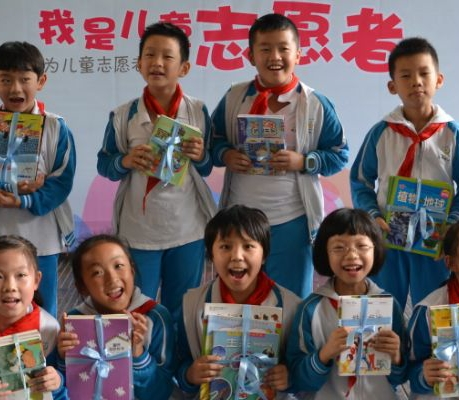
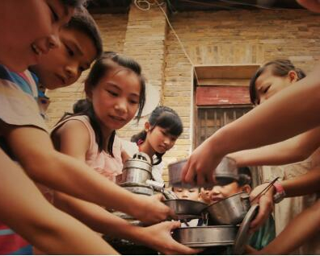
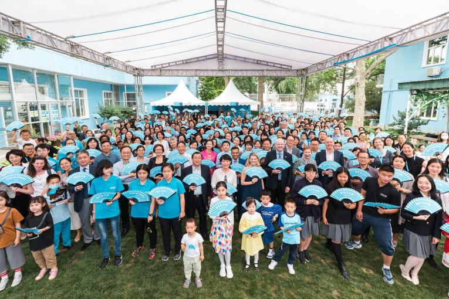

涓滴之水成海洋，颗颗爱心变希望。感谢您的帮助与支持，
您善意的举动对于那些需要帮助的人来说是黑夜里的明灯！

中国社会福利基金会爱小丫基金于2013年11月11日成立。爱小丫基金目前开展以生理卫生知识普及和生理卫生用品发放为主的“女生加油计划”，通过“小丫包+小丫课堂”模式，小丫包内含内衣裤与生理卫生用品，小丫课堂普及基本的生理卫生知识，呵护女童健康成长，帮助女童直面青春期的烦恼；以助学为主的“女生扶持计划”，通过助学款与生活补助的形式帮助偏远地区女童顺利完成学业。

“月经安心行动”为国内面临月经贫困的贫困地区或贫困未成年女性送去卫生巾、月经知识和性教育。该项目由无锡灵山慈善基金会予她同行基金执行，予她同行基金以解决国内贫困地区、非贫困地区但面临贫困状态的未成年女性的月经贫困问题为使命，该基金运营团队前身是 @梁钰Stacey 在微博发起的志愿团体“姐妹战疫安心行动”志愿者团体，该团体在2020年新冠肺炎疫情期间为前线女性医护人员的生理健康提供物资保障。

四川省妇女儿童基金会的宗旨为：“提高妇女儿童素质，维护妇女儿童合法权益，促进四川妇女儿童的生存、保护和发展，辅助四川发展妇女儿童社会福利事业。成立以来，得到了四川省委省政府的亲切关怀，并得到了中国妇女发展基金会和中国儿童少年基金会的大力支持，累计筹募资金（物资）达6亿元，实施了母亲健康快车、母亲水窖、母亲邮包、贫困母亲两癌救助 、春蕾计划、 安康计划、儿童公益学院、乐育·心海护航计划等50多个公益项目，服务范围遍及全省21个市州的近200个区县，受益妇女、儿童高达1000多万人次。

中国妇女发展基金会(China Women's Development Foundation，CWDF)，简称"中国妇基会"，成立于1988年12月，是由中华人民共和国民政部登记、中华全国妇女联合会主管的具有慈善组织属性的基金会。中国妇女发展基金会还设立了"玫琳凯妇女创业基金"、"下岗女工再就业基金"、"妇女理论研究基金"、"女大学生助学、奖学基金"、"妇女儿童保健基金"等专项基金，现仍在实施中。

联合国儿童基金会(United Nations International Children's Emergency Fund，简称UNICEF)，原名"联合国国际儿童紧急救助基金会"，于1946年12月11日创建，最初目的是满足第二次世界大战之后欧洲与中国儿童的紧急需求。2017年11月21日，中国政府向联合国儿童基金会捐款200万美元，用于救助索马里受旱灾影响的儿童。联合国儿童基金会支持《儿童权利公约》。努力确保受歧视的人、特别是女孩和妇女获得平等待遇。为实现《千年发展目标》和《联合国宪章》中的承诺而努力。为实现和平与安全而奋斗，并致力鼓励每个人对儿童作出的承诺负责任。